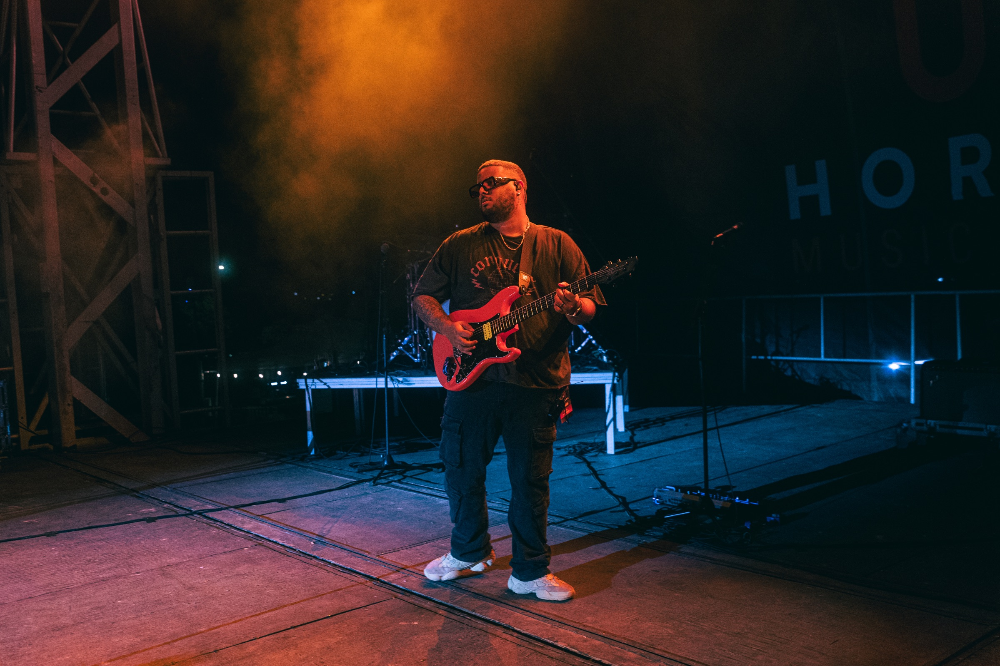
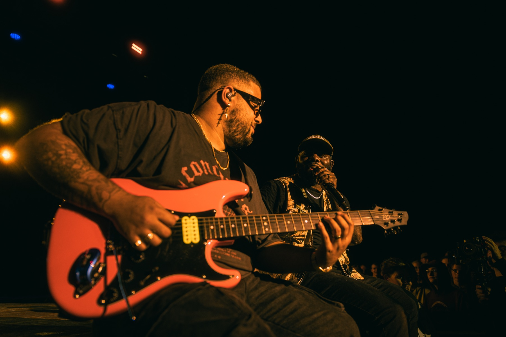
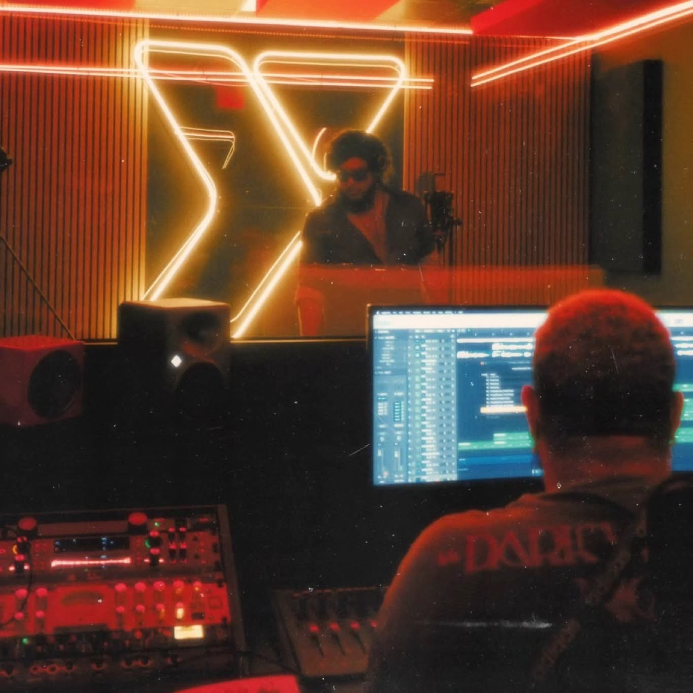
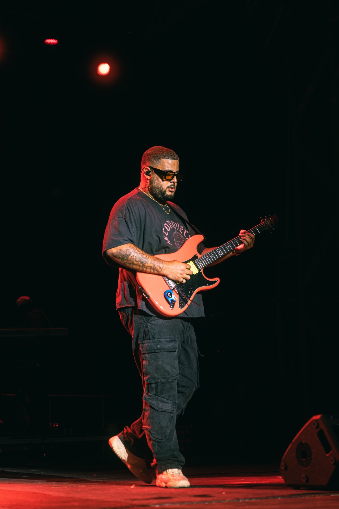
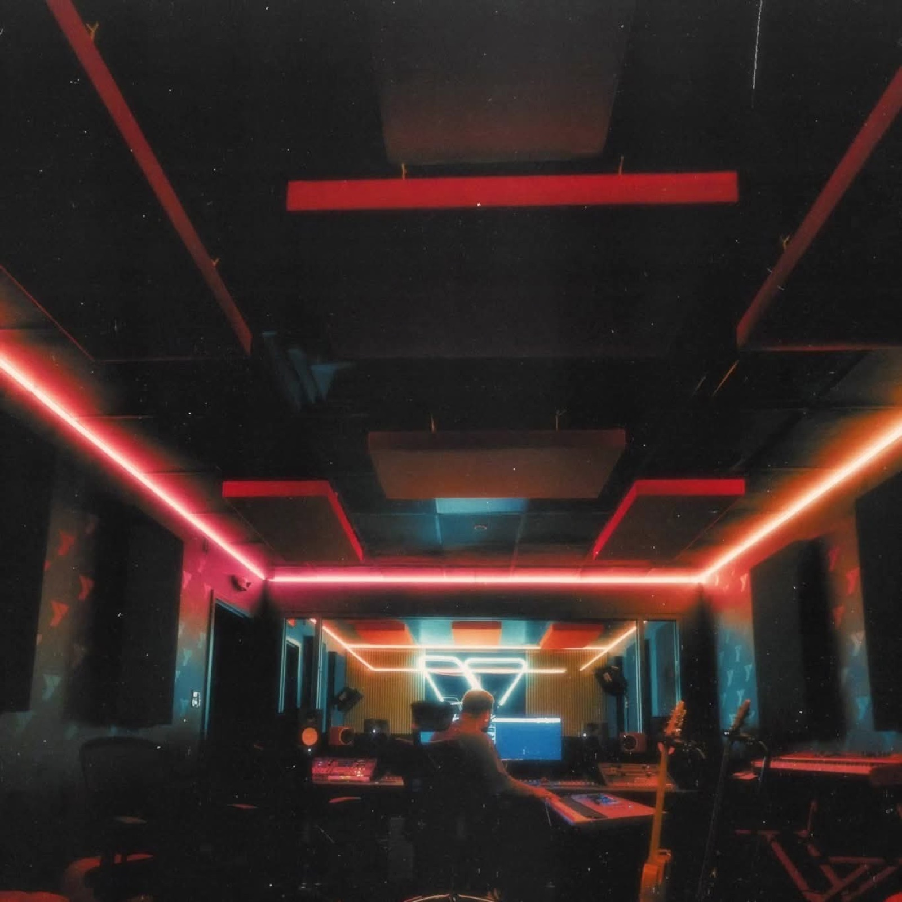
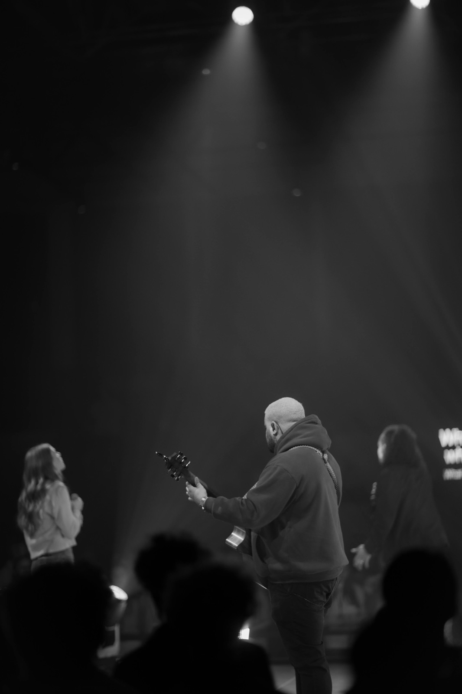
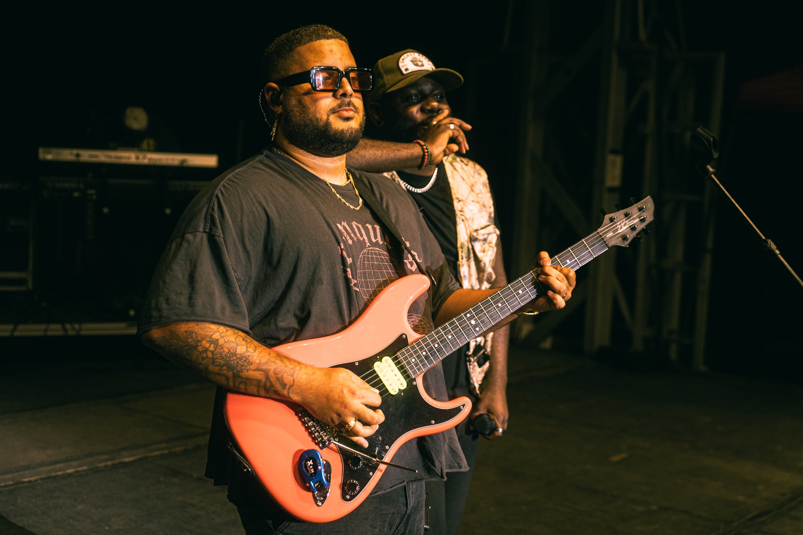
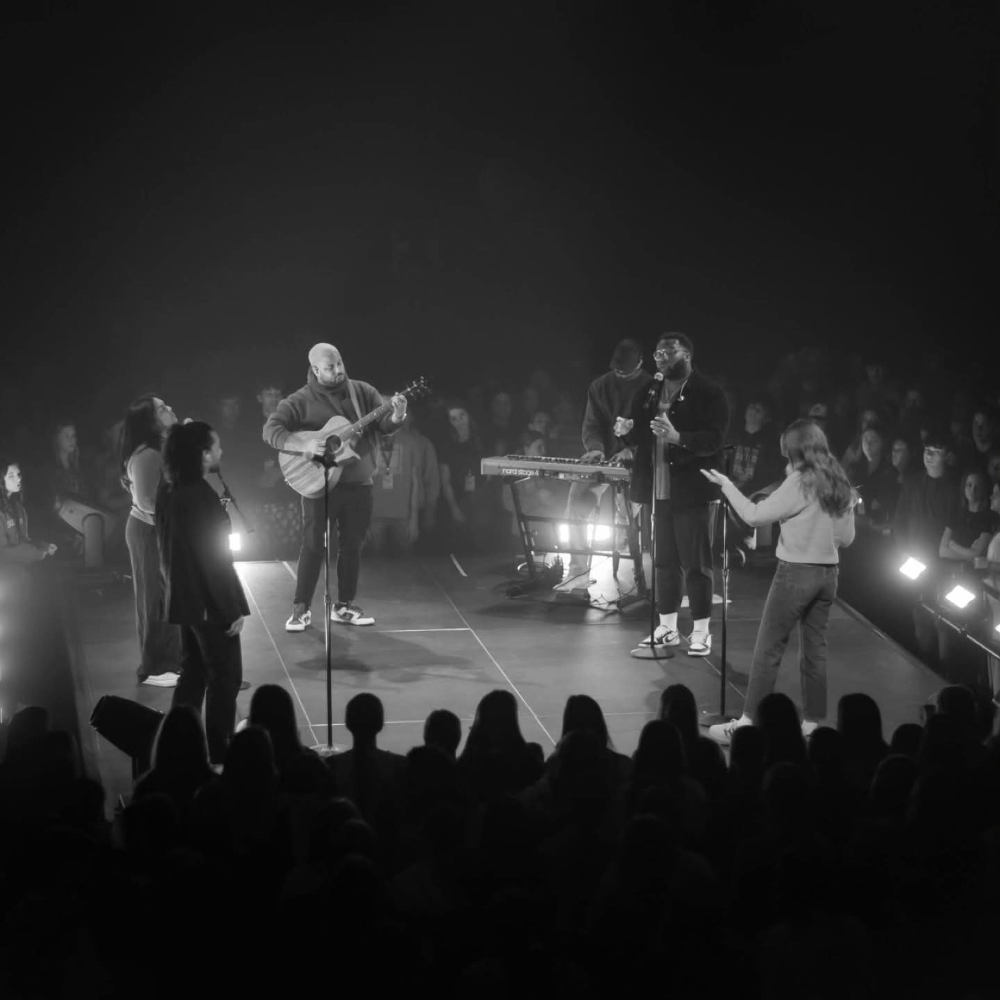

Touring & Live
- Jonathan TraylorGuitarist
- Chichi OnyekanneMusic Director & Guitarist
- Lina MapesMusic Director & Guitarist

Fort Worth Artist / Producer / Guitarist
Production, live direction, and mixes shaped around the artist, the genre, and one goal: serve the song and help every record feel honest, intentional, and fully alive.
Toine Brailsford is a guitarist, music director, producer, mix engineer, and songwriter based in the Dallas-Fort Worth area. Known for his musical versatility and thoughtful approach to collaboration, he has built a career helping artists bring their vision to life, both on stage and in the studio.
With experience touring nationally, leading live bands, producing records, and mixing music across multiple genres, Toine has become a trusted creative partner for artists seeking both musical excellence and authenticity. His musical foundation spans R&B, gospel, soul, pop, jazz, blues, country, and metal, allowing him to adapt seamlessly to a wide range of artists, productions, and live performance environments.
Whether performing as a guitarist, directing a live show, producing a record, or crafting a mix, Toine approaches every project with the same philosophy: serve the song first. He believes the most impactful music is built on honest emotion, intentional creativity, and attention to every detail.
As an artist, Toine is continually refining his craft as a guitarist, vocalist, and songwriter, with a passion for creating music that resonates long after the final note. His mission is simple: to create meaningful experiences through music and help every artist he works with become the best version of themselves.







Touring & Live
Studio
Brands
Beat building, arrangement, live instrumentation, and record direction with a musician’s ear.
Session setup, vocal comping, tuning direction, editing, and clean delivery.
Mix prep, critique, polish, stem work, and release-ready decision making.
Creative direction, branding feedback, song selection, live show development, and release strategy.
This guided intake captures the details that matter: sound references, demos, goals, social presence, and where the artist is stuck. It can later connect to an AI assistant, email, CRM, or booking calendar.
Start with the screener, then book a discovery call, studio session, mix review, or production block. The live version can connect to Calendly, Acuity, Square, Stripe, or your preferred calendar.